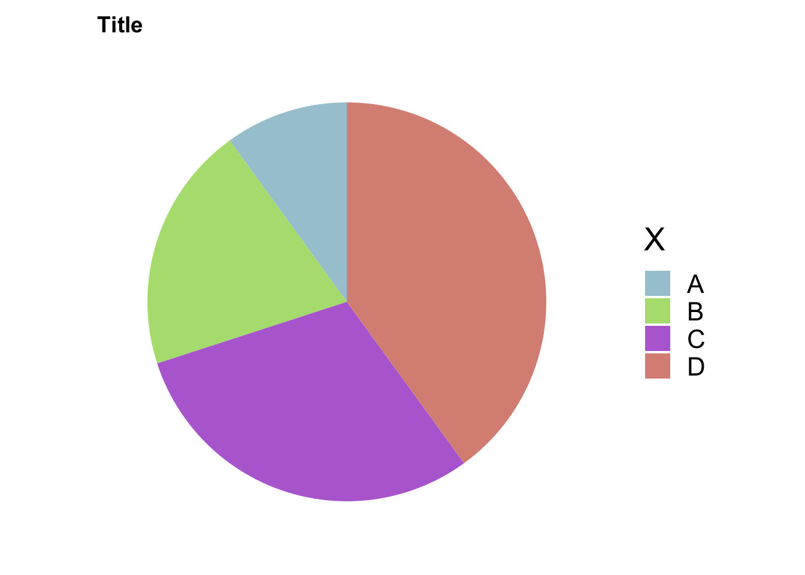

library(conflicted)
library(tidyverse)── Attaching core tidyverse packages ──────────────────────── tidyverse 2.0.0 ──
✔ dplyr 1.1.4 ✔ readr 2.1.5
✔ forcats 1.0.0 ✔ stringr 1.5.1
✔ ggplot2 3.5.0 ✔ tibble 3.2.1
✔ lubridate 1.9.3 ✔ tidyr 1.3.1
✔ purrr 1.0.2 dat <- tibble(y = c(1, 2, 3, 4), x = c('A', 'B', 'C', 'D'), color = c("#A6C9D5", "#B3DF7F", "#B76ED5", "#DA9083"))
dat# A tibble: 4 × 3
y x color
<dbl> <chr> <chr>
1 1 A #A6C9D5
2 2 B #B3DF7F
3 3 C #B76ED5
4 4 D #DA9083dat %>%
# 让四种类型堆叠在一起，用不同的颜色填充
ggplot(aes(x = '', y = y, fill = x)) +
geom_bar(width = 1, stat = 'identity') +
coord_polar("y", start = 0) +
labs(fill = 'X', title = 'Title') +
scale_fill_manual(values = dat$color) +
theme_minimal(base_size = 20) +
theme(
axis.title.x = element_blank(),
axis.title.y = element_blank(),
panel.border = element_blank(),
panel.grid = element_blank(),
axis.ticks = element_blank(),
plot.title = element_text(size = 14, face = 'bold'),
axis.text.x = element_blank(),
legend.position = 'right'
)
# 输出图片的大小
# ggsave('filepath.pdf', width = 14, height = 8)